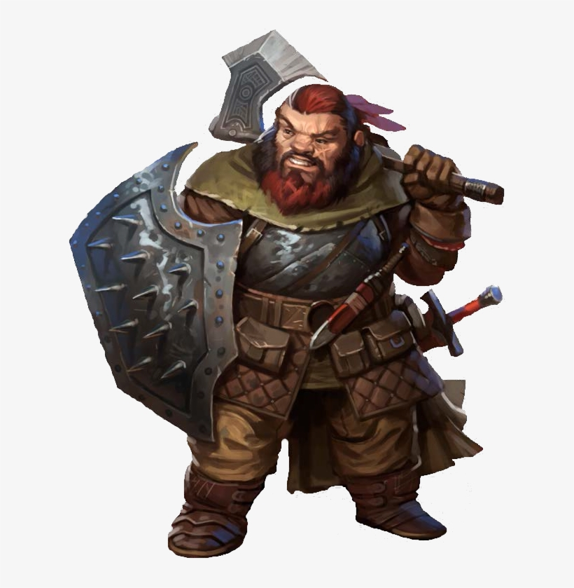
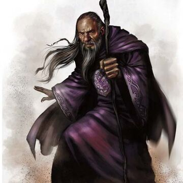
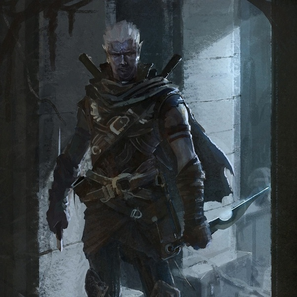

Todos los guerreros comparten un dominio magistral de las armas y armaduras, y un
exhaustivo conocimiento
de las habilidades del combate. Además, están muy relacionados con la muerte, tanto repartiéndola como
mirándola fijamente, desafiantes.
Rasgos de clase
Dado de Golpe: d10
Competencias
Armadura: todas las armaduras y escudos.
Armas: armas sencillas y marciales.
Herramientas: ninguna.
Tiradas de salvación: Fuerza, Constitución.
Habilidades: elige dos entre Acrobacias, Atletismo, Historia, Intimidación, Percepción,
Perspicacia, Supervivencia y Trato con Animales.
Más...

Los magos son los practicantes supremos de la magia, definidos y unidos como una
clase por los
hechizos
que conjuran. A partir de la sutil onda de la magia que impregna el cosmos, los magos lanzan
explosivos
hechizos de fuego, arcos voltaicos, sutiles engaños y brutales formas de control mental.
Rasgos de clase
Dado de Golpe: d6
Competencias
Armadura: ninguna.
Armas: dagas, dardos, hondas, bastones y ballestas ligeras.
Herramientas: ninguna.
Tiradas de salvación: Inteligencia, Sabiduría.
Habilidades: elige dos entre Conocimiento Arcano, Historia, Investigación, Medicina,
Perspicacia y Religión.
Más...

Los pícaros confían sus habilidades, el sigilo y las vulnerabilidades de sus
oponentes para lograr
sacar ventaja en cualquier situación. Tienen un don para encontrar la solución a prácticamente
cualquier problema, demostrando un ingenio y versatilidad, que es la piedra angular de cualquier buen
grupo de aventureros.
Rasgos de clase
Dado de Golpe: d8
Competencias
Armadura: armaduras ligeras.
Armas: armas sencillas, ballestas de mano, espadas cortas, espadas largas y estoques.
Herramientas: herramientas de ladrón.
Tiradas de salvación: Destreza, Inteligencia.
Habilidades: elige cuatro entre Acrobacias, Atletismo, Engaño, Interpretación,
Intimidación, Investigación, Juego de Manos, Percepción, Perspicacia, Persuasión y Sigilo.
Más...